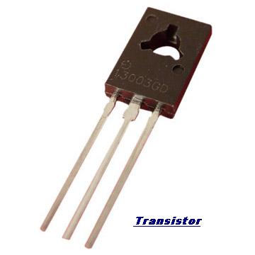
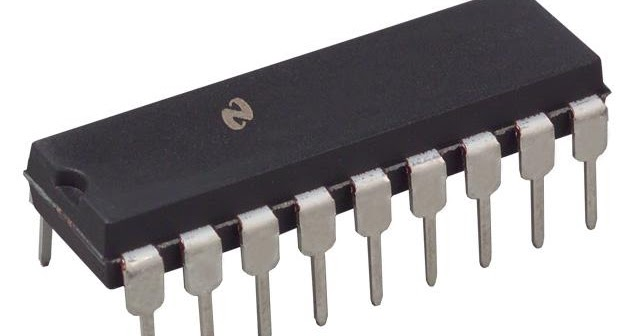
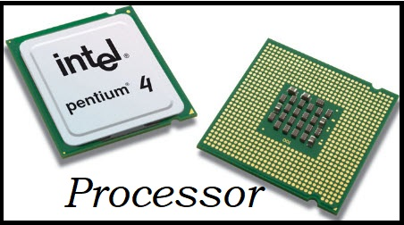
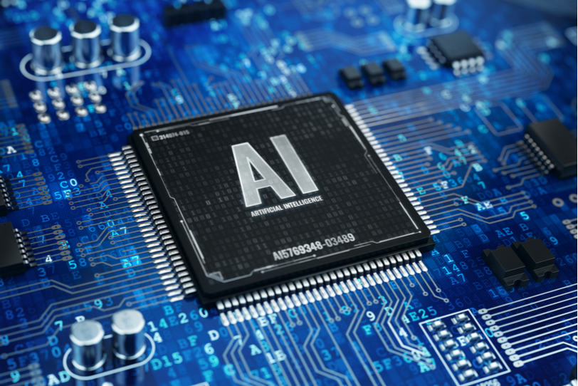

The Five Generation of Computer
The history of computer development is a computer science topic that is often used to reference the different generations of computing devices.
Each one of the five generations of computers is characterized by a major technological development that fundamentally changed the way computers operate.
Most major developments from the 1940's to present day have resulted in increasingly smaller, cheaper, more powerful and more efficient computing devices.
What Are the Five Generations of Computers?
In this Webopedia Study Guide, you'll learn more about each of the five generations of computers and the advances in technology that have led to the development of the many computing devices that we use today. Our journey of the five generations of computers starts in 1940 with vacuum tube circuitry and goes to the present day — and beyond — with artificial intelligence (AI) systems and devices.
First Generation: Vacuum Tubes (1940-1956)
 The first computer systems used vacuum tubes for circuitry and magnetic drums for memory, and were often enormous, taking up entire rooms. These computers were very expensive to operate and in addition to using a great deal of electricity, the first computers generated a lot of heat, which was often the cause of malfunctions.
The first computer systems used vacuum tubes for circuitry and magnetic drums for memory, and were often enormous, taking up entire rooms. These computers were very expensive to operate and in addition to using a great deal of electricity, the first computers generated a lot of heat, which was often the cause of malfunctions.
First generation computers relied on machine language, the lowest-level programming language understood by computers, to perform operations, and they could only solve one problem at a time. It would take operators days or even weeks to set-up a new problem. Input was based on punched cards and paper tape, and output was displayed on printouts.
The UNIVAC and ENIAC computers are examples of first-generation computing devices. The UNIVAC was the first commercial computer delivered to a business client, the U.S. Census Bureau in 1951
Second Generation: Transistors (1956-1963)

The world would see transistors replace vacuum tubes in the second generation of computers. The transistor was invented at Bell Labs in 1947 but did not see widespread use in computers until the late 1950s.
The transistor was far superior to the vacuum tube, allowing computers to become smaller, faster, cheaper, more energy-efficient and more reliable than their first-generation predecessors. Though the transistor still generated a great deal of heat that subjected the computer to damage, it was a vast improvement over the vacuum tube. Second-generation computers still relied on punched cards for input and printouts for output.
From Binary to Assembly
Second-generation computers moved from cryptic binary machine language to symbolic, or assembly, languages, which allowed programmers to specify instructions in words. High-level programming languages were also being developed at this time, such as early versions of COBOL and FORTRAN. These were also the first computers that stored their instructions in their memory, which moved from a magnetic drum to magnetic core technology.
The first computers of this generation were developed for the atomic energy industry.
Third Generation: Integrated Circuits (1964-1971)

The development of the integrated circuit was the hallmark of the third generation of computers. Transistors were miniaturized and placed on silicon chips, called semiconductors, which drastically increased the speed and efficiency of computers.
Instead of punched cards and printouts, users interacted with third generation computers through keyboards and monitors and interfaced with an operating system, which allowed the device to run many different applications at one time with a central program that monitored the memory. Computers for the first time became accessible to a mass audience because they were smaller and cheaper than their predecessors.
Did You Know... ? An integrated circuit (IC) is a small electronic device made out of a semiconductor material. The first integrated circuit was developed in the 1950s by Jack Kilby of Texas Instruments and Robert Noyce of Fairchild Semiconductor.
Fourth Generation: Microprocessors (1971-Present)

The microprocessor brought the fourth generation of computers, as thousands of integrated circuits were built onto a single silicon chip. What in the first generation filled an entire room could now fit in the palm of the hand. The Intel 4004 chip, developed in 1971, located all the components of the computer—from the central processing unit and memory to input/output controls—on a single chip.
In 1981 IBM introduced its first computer for the home user, and in 1984 Apple introduced the Macintosh. Microprocessors also moved out of the realm of desktop computers and into many areas of life as more and more everyday products began to use microprocessors.
As these small computers became more powerful, they could be linked together to form networks, which eventually led to the development of the Internet. Fourth generation computers also saw the development of GUIs, the mouse and handheld devices.
Fifth Generation: Artificial Intelligence (Present and Beyond)

Fifth generation computing devices, based on artificial intelligence, are still in development, though there are some applications, such as voice recognition, that are being used today. The use of parallel processing and superconductors is helping to make artificial intelligence a reality.
Quantum computation and molecular and nanotechnology will radically change the face of computers in years to come. The goal of fifth-generation computing is to develop devices that respond to natural language input and are capable of learning and self-organization.